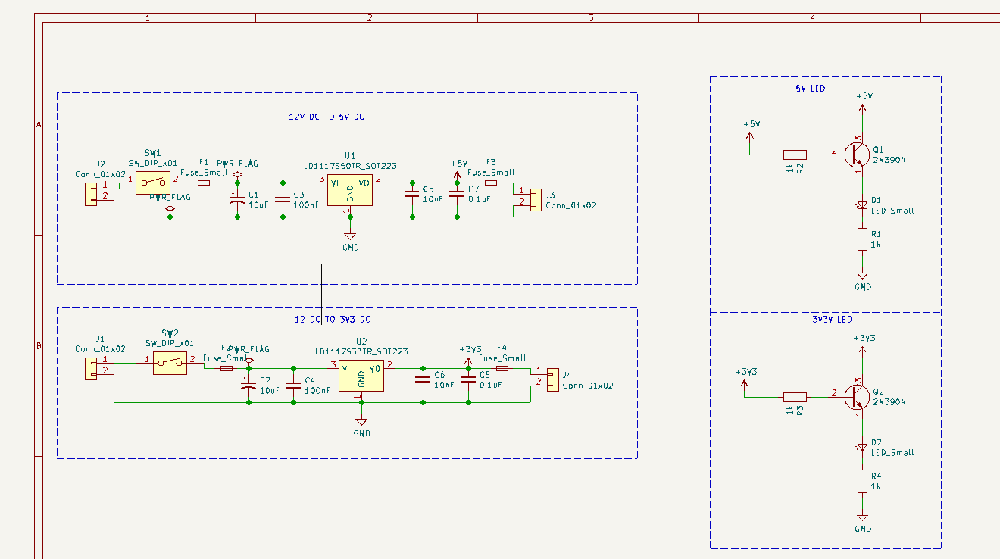
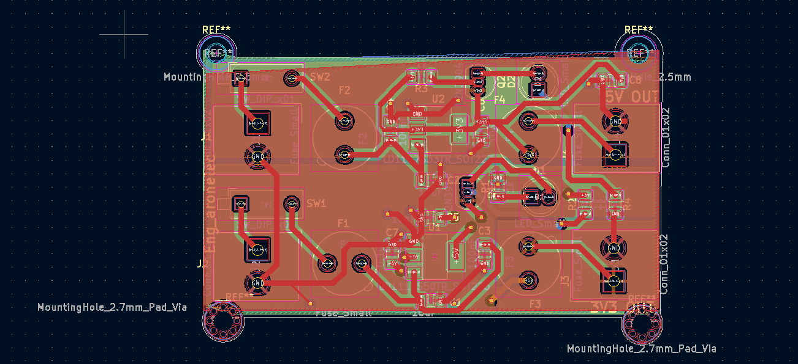
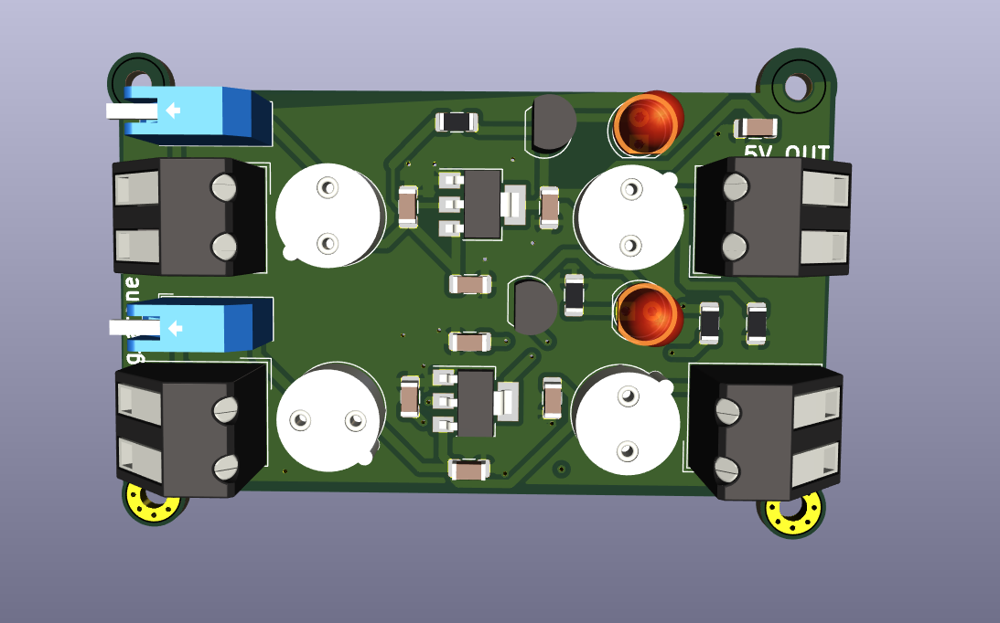
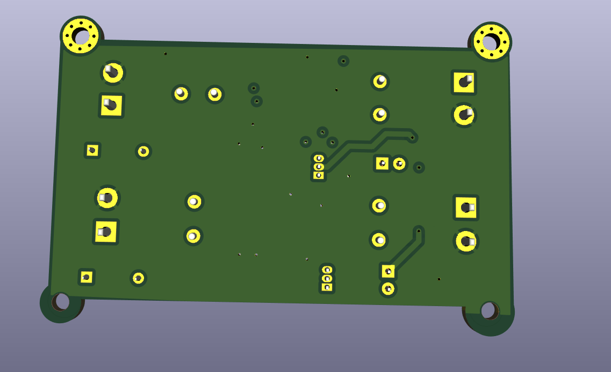

⚡ Dual Output Power Supply PCB
📌 Overview
This project is a custom-designed PCB using KiCad that converts 12V DC into
regulated 5V and 3.3V outputs for embedded systems.
🎯 Features
- 12V → 5V & 3.3V conversion
- LD1117 linear regulators
- Fuse-based input protection
- LED indicators
⚙️ How It Works
- 12V input is applied through terminals
- Fuses protect against overcurrent
- LD1117 regulators convert voltage
- Capacitors stabilize output
🖼 PCB Design




🧠 Technologies Used
KiCad, PCB Design, Power Electronics
🚀 Applications
Embedded systems, IoT, microcontroller boards